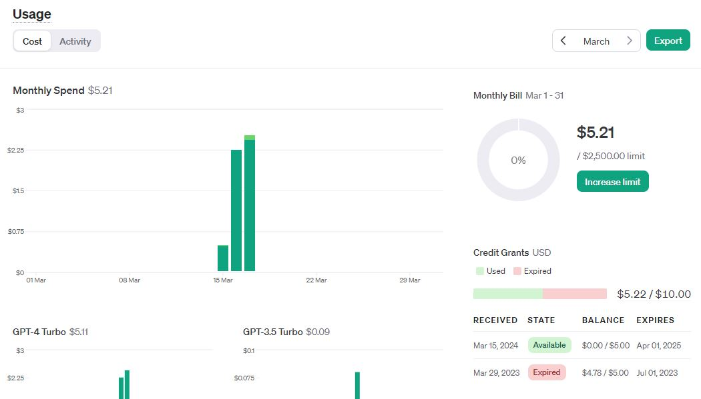
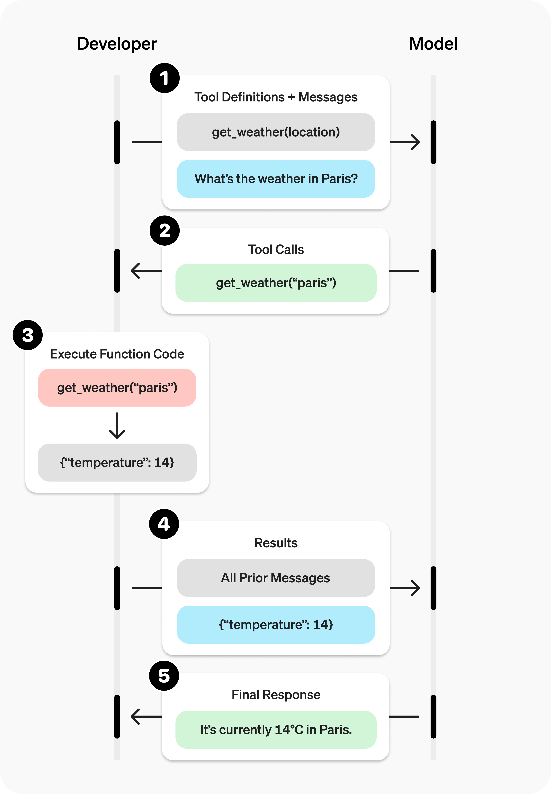

Hướng dẫn toàn diện từ cơ bản đến nâng cao: Text, JSON & Function Calling
Khởi tạo project Python, cài đặt package, lấy và bảo mật API Key.
Hiểu về Roles (System, User, Assistant), gửi request và tinh chỉnh Parameters.
Xử lý dữ liệu định dạng JSON Schema (Structured Outputs) và Function Calling.
Bài tập vận dụng từng phần và Project cuối khóa tổng hợp kiến thức.

1. Khởi tạo môi trường ảo (.venv):
Mở Terminal/CMD tại thư mục project và chạy lệnh:
python -m venv .venv
# Kích hoạt (Windows): .venv\Scripts\activate
# Kích hoạt (Mac/Linux): source .venv/bin/activate2. Cài đặt các Package cần thiết:
pip install openai python-dotenv pydantic3. Thiết lập biến môi trường (.env):
Tạo file .env ngang hàng với code và thêm:
OPENAI_API_KEY=sk-proj-xxyyzz...4. Lưu lại thông tin package đã cài đặt:
# Lưu thông tin package vào requirements.txt
pip freeze > requirements.txt
# Sau này khi deploy hoặc chuyển máy, chỉ cần chạy:
pip install -r requirements.txtGiải thích chi tiết:
Khi giao tiếp với AI, hội thoại được cấu trúc dưới dạng một danh sách các "tin nhắn" (messages). Mỗi tin nhắn phải thuộc về một trong 3 vai trò sau:
Dùng để thiết lập bối cảnh, nhân cách và các quy tắc cốt lõi cho AI. Thường đặt ở đầu danh sách.
VD: "Bạn là giáo viên Toán chuyên nghiệp."
Câu hỏi hoặc mệnh lệnh xuất phát từ người dùng cuối (chúng ta). AI sẽ đọc và trả lời những yêu cầu này.
VD: "Giải thích cho tôi định lý Pytago là gì?"
Câu trả lời sinh ra từ mô hình AI. Ta có thể tự chèn các tin nhắn này để định hướng AI phản hồi tiếp theo.
VD: "Định lý Pytago phát biểu rằng..."
Đoạn code bên phải minh họa cách tối giản nhất để kết nối tới OpenAI API và nhận về một câu trả lời dạng văn bản.
import os
from openai import OpenAI
from dotenv import load_dotenv
# Load API Key từ file .env
load_dotenv()
# Khởi tạo OpenAI client
client = OpenAI()
# Gửi Request
response = client.responses.create(
model="gpt-5.2",
input=[
{"role": "system", "content": "Bạn là trợ lý."},
{"role": "user", "content": "Xin chào!"}
]
)
# In ra phản hồi (Text)
print(response.output_text)Khi gọi hàm create(), bạn có thể truyền thêm các tham số để kiểm soát đầu ra của AI:
# Gửi request với các tham số tùy chỉnh
response = client.responses.create(
model="gpt-5.2",
input=[
{
"role": "user",
"content": "Kể một câu chuyện ngắn."
}
],
# Tăng tính sáng tạo của câu chuyện
temperature=0.8,
# Giữ mặc định vì đã chỉnh temperature
top_p=1.0,
# Giới hạn sinh ra khoảng ~350 chữ
max_output_tokens=500
)
print(response.output_text)Yêu cầu: Viết một chương trình Python chạy trên Terminal cho phép người dùng chat liên tục với AI. Chương trình phải có "bộ nhớ" (nhớ được những câu hỏi và trả lời trước đó). Gõ "exit" để thoát.
Giải thích thuật toán:
from openai import OpenAI
client = OpenAI()
# Khởi tạo bộ nhớ (lịch sử hội thoại)
messages = [{"role": "system", "content": "Bạn là trợ lý."}]
while True:
user_input = input("Bạn: ")
if user_input.lower() == "exit":
print("Tạm biệt!"); break
# Thêm câu hỏi vào lịch sử
messages.append({"role": "user", "content": user_input})
response = client.responses.create(
model="gpt-5.2", input=messages
)
reply = response.output_text
print("AI: " + reply)
# Quan trọng: Thêm câu trả lời vào lịch sử
messages.append({"role": "assistant", "content": reply})
Trong thực tế, ta thường cần AI trả về dữ liệu có cấu trúc (JSON) thay vì text thuần để dễ dàng xử lý bằng code (ví dụ: lưu vào database).
Cách tiếp cận cơ bản:
response = client.responses.create(
model="gpt-5.2",
# Ép kiểu dữ liệu trả về thành JSON Object
text={ "format": { "type": "json_object" } },
input=[
{
"role": "system",
"content": "Bạn là một API. Hãy trả về JSON."
},
{
"role": "user",
"content": "Cho tôi tên 2 loại trái cây đỏ."
}
]
)
import json
json_str = response.output_text
data = json.loads(json_str)
print(data)
# KQ: {'fruits': ['táo', 'dâu tây']}Tính năng Structured Outputs đảm bảo 100% AI trả về JSON khớp đúng với cấu trúc (Schema) bạn đã định nghĩa trước.
from pydantic import BaseModel
from openai import OpenAI
client = OpenAI()
# Định nghĩa Schema (Cấu trúc mong muốn)
class UserInfo(BaseModel):
name: str
age: int
# Sử dụng .parse thay vì .create
completion = client.responses.parse(
model="gpt-5.2", # Bắt buộc model hỗ trợ
input=[
{"role": "user", "content": "Tôi tên Nam, 25 tuổi."}
],
response_format=UserInfo, # Gắn schema vào
)
# Nhận object trực tiếp
user = completion.output_parsed
print(user.name) # Output: Nam
print(user.age) # Output: 25AI bị giới hạn bởi dữ liệu quá khứ và không thể tự thao tác với thế giới thực. Function Calling (hay Tool Calling) là cung cấp cho AI danh sách các "công cụ" (hàm Python) để nó tự chọn gọi khi cần thiết.
*Lưu ý: Mô hình KHÔNG tự chạy hàm. Nó chỉ phân tích và trả về "Yêu cầu gọi hàm X với tham số Y". Code Python của bạn mới là nơi thực thi!

Khai báo danh sách các hàm (tools) theo chuẩn JSON Schema, mô tả chi tiết tên hàm, mục đích sử dụng và các tham số (parameters) cần thiết để AI hiểu được.
Truyền câu hỏi của User cùng với mảng tools vừa định nghĩa lên API thông qua client.responses.create().
Kiểm tra kết quả trả về. Nếu AI quyết định cần phải gọi hàm, thông tin sẽ nằm trong response.output với item có type="function_call". Tiến hành trích xuất tên hàm và tham số.
Sử dụng Code Python của bạn để chạy hàm thực tế với tham số nhận được. Sau đó, gửi kết quả ngược lại API để AI tổng hợp câu trả lời.
# 1. Định nghĩa công cụ (JSON Schema)
tools = [{
"type": "function",
"function": {
"name": "get_weather",
"description": "Lấy thời tiết tại một TP",
"parameters": {
"type": "object",
"properties": {
"location": {
"type": "string",
"description": "Tên TP, vd: Hà Nội"
}
},
"required": ["location"]
}
}
}]# 2. Gửi request kèm theo tools
response = client.responses.create(
model="gpt-5.2",
input=[{
"role": "user",
"content": "Hà Nội hôm nay nóng không?"
}],
tools=tools
)
# 3. Trích xuất yêu cầu gọi hàm từ AI
tool_call = next(
item for item in response.output
if item.type == "function_call"
)
print("Tên hàm:", tool_call.name)
# In ra: get_weather
print("Tham số:", tool_call.arguments)
# In ra JSON: {"location": "Hà Nội"}Đề bài: Bạn có một văn bản lộn xộn chứa thông tin khách hàng từ CSKH:
"Hôm qua khách Nguyễn Văn A (tuổi 30) gọi điện. Bảo là thích chơi thể thao. Gửi email xác nhận qua nguyenvana@email.com, SDT là 0912345678."
Hãy viết code dùng Pydantic Schema và Structured Outputs để bóc tách thông tin trên thành một Object chuẩn hóa chứa (name, age, email, phone, hobbies) và in kết quả.
BaseModel từ thư viện Pydantic. Cần import thêm thư viện typing (dùng List/Optional) nếu thuộc tính hobbies lưu nhiều sở thích.CustomerInfo(BaseModel). Khai báo kiểu dữ liệu rõ ràng: name: str, age: int, email: str, phone: str, hobbies: list[str].client.responses.parse. Đưa đoạn text CSKH vào phần content của User role. Đừng quên truyền response_format=CustomerInfo.customer = response.output_parsed. Sau đó in ra customer.email.Đề bài: Tạo một hàm Python cơ bản get_weather(location) giả lập việc trả về nhiệt độ mặc định là 30°C và trời nắng.
Khi người dùng nhập câu hỏi "Thời tiết ở Đà Nẵng thế nào?", ứng dụng của bạn phải sử dụng Function Calling để:
1. AI tự động trích xuất tham số "Đà Nẵng".
2. Ứng dụng chạy hàm giả lập đã tạo.
3. Gửi kết quả ngược lại cho API để AI tổng hợp thành một câu trả lời tự nhiên (VD: "Hiện tại Đà Nẵng đang khoảng 30 độ C và trời nắng nhé!").
tools định nghĩa cấu trúc hàm get_weather. Gọi client.responses.create() truyền vào input của user và tham số tools.response.output để lấy function call đầu tiên. Trích xuất thuộc tính arguments (dùng json.loads để parse thành Dictionary) để lấy giá trị biến location. Chạy hàm Python get_weather(location) của bạn để lấy dữ liệu dạng chuỗi.{"type": "function_call_output", "call_id": ..., "output": ...} để trả kết quả cho mô hình.client.responses.create() lần thứ hai với previous_response_id=response.id và mảng input chứa function_call_output. Lúc này AI sẽ tổng hợp và trả lời tự nhiên.Hãy áp dụng toàn bộ kiến thức về API, Roles, JSON Schema và Function Calling để xây dựng hoàn thiện một trong các dự án thực tế sau đây:
Yêu cầu: Xây dựng CLI Chatbot có bộ nhớ và tính cách riêng biệt (VD: Chuyên gia tâm lý, Giáo viên Tiếng Anh).
Gợi ý: Tận dụng System prompt, sử dụng mảng messages để lưu lịch sử hội thoại, tùy chỉnh thông số temperature.
Yêu cầu: Viết script đọc văn bản ghi chú/hóa đơn tự do và trích xuất thành Data chuẩn (Tên món, Giá, Số lượng).
Gợi ý: Ứng dụng Pydantic định nghĩa BaseModel, sử dụng hàm .parse() để lấy Structured Outputs dưới dạng JSON Object.
Yêu cầu: Xây dựng Chatbot có khả năng trả lời chính xác thông tin thời tiết thực tế ở bất kì khu vực nào.
Gợi ý: Áp dụng kỹ thuật Function Calling kết hợp gọi API miễn phí từ bên thứ 3 (như OpenWeatherMap API).
Yêu cầu: Đưa nội dung 1 CV vào, yêu cầu AI phân tích ưu/nhược điểm, cho điểm (1-10) và tư vấn vị trí phù hợp.
Gợi ý: Kết hợp Role (System giả lập HR) và JSON Structured Outputs chứa các fields: score, pros, cons, advice.
Bạn có câu hỏi nào về các Project hoặc OpenAI API không?